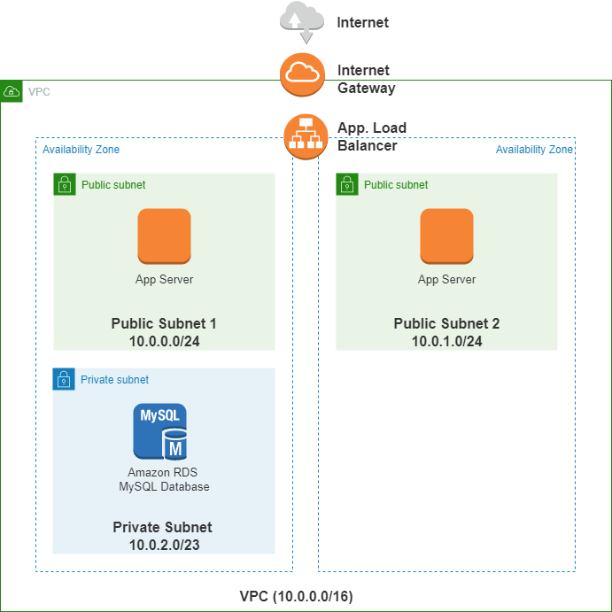

Amazon AWS
Despliegue de un entorno real en la nube (AWS)
Escenario de despliegue:

Aplicación web para el despliegue: https://github.com/aws-samples/simple-phonebook-web-application
Pasos para el despliegue:
- Creación y configuración de la VPC
- Creación y configuración de la subred privada
- Creación y configuración de las subredes públicas
- Creación y configuración del Internet Gateway
- Creación y configuración de una Route Table para la subred privada. Asociación de la nueva route table a la subred privada. No debe añadirse ninguna ruta adicional a las que se crean por defecto (ten en cuenta que la ruta por defecto que indica que el tráfico destinado a 10.0.0.0/16 será enrutado localmente es lo que permite que exista conectividad entre todas las subredes que se encuentran en la VPC).
- Creación y configuración de un Route Table para las subredes públicas. Asociación de la nueva route table a la subred pública. Creación de una nueva ruta que redireccione el tráfico dirigido a 0.0.0.0 hacia el Internet Gateway.
- Creación y configuración de Security Groups: Creación de dos Security Groups que controlarán las conexiones entrantes y salientes hacia la aplicación web y el servidor de base de datos.
- Security Group para la aplicación web:
- Crear regla de entrada para permitir tráfico HTTP desde cualquier dirección IPv4
- Crear regla de entrada para permitir tráfico SSH desde cualquier dirección IPv4
- Security Group para la base de datos:
- Crear regla de entrada para permitir el tráfico MySQL desde el Security Group de la aplicación web
- Creación y configuración de los servidores de aplicación en EC2:
- Script user data para crear las instancias:
#!/bin/bash
yum -y install httpd php mysql php-mysql
case $(ps -p 1 -o comm | tail -1) in
systemd) systemctl enable --now httpd ;;
init) chkconfig httpd on; service httpd start ;;
*) echo "Error starting httpd (OS not using init or systemd)." 2>&1
esac
if [ ! -f /var/www/html/bootcamp-app.tar.gz ]; then
cd /var/www/html
wget https://s3.amazonaws.com/immersionday-labs/bootcamp-app.tar
tar xvf bootcamp-app.tar
chown apache:root /var/www/html/rds.conf.php
fi
yum -y update
- Creación y configuración del Target Group
- Creación y configuración del Application Load Balancer
- Creación y configuración del servidor de base de datos MySQL